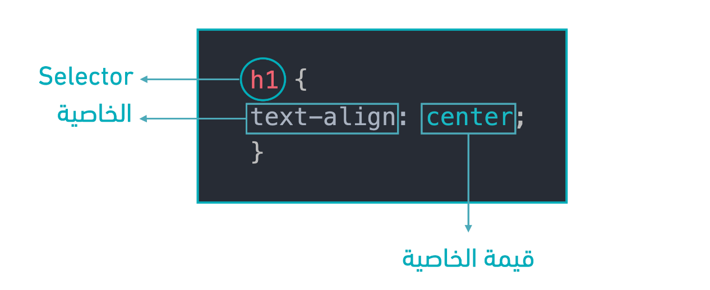
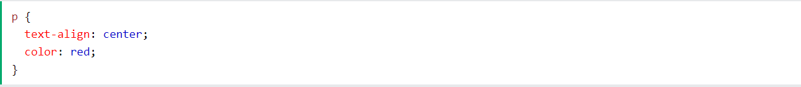
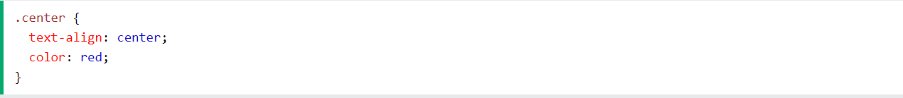
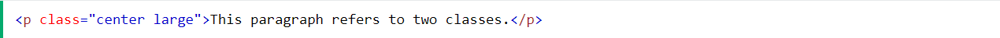
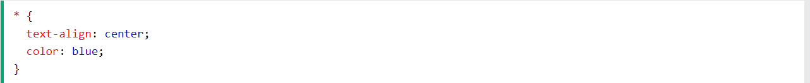
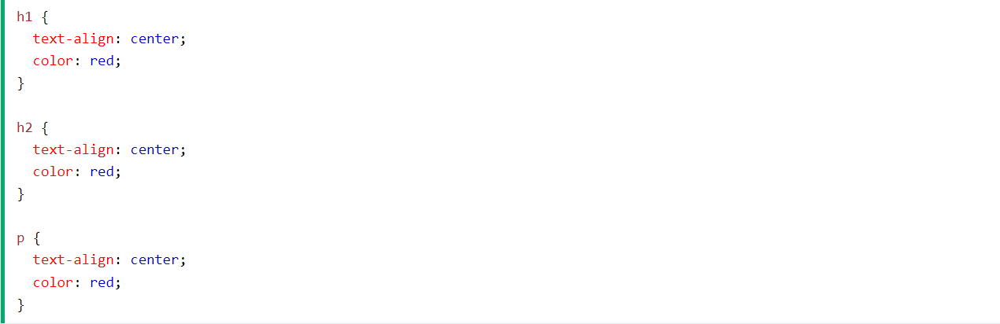
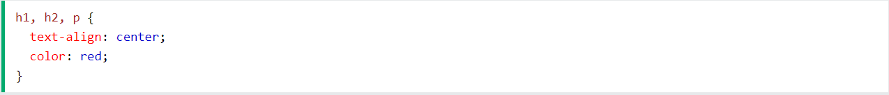

يستخدم Selector لتحديد ماهو العنصر المراد تنسيقه من عناصر HTML فيجب قبل أي عملية تنسيق وكتابة خاصيّة وقيمة لها يتم قبلها تحديد Selector وهو الذي يحدد العنصر الذي سيتم تطبيق التنسيق عليه، مثال على طريقة كتابة Selector كالتالي:
تُستخدم محددات CSS "للبحث" (أو تحديد) عناصر HTML التي تريد تصميمها.
يحدد محدد العنصر عناصر HTML بناءً على اسم العنصر.
هنا ، ستتم محاذاة جميع عناصر
في الصفحة إلى المنتصف ، بلون أحمر للنص:
يستخدم محدد الهوية خاصية id لعنصر HTML لتحديد عنصر معين..
معرف عنصر فريد داخل الصفحة ، لذلك يتم استخدام محدد الهوية لتحديد عنصر فريد واحد!
لتحديد عنصر بمعرف معين ، اكتب حرف التجزئة (#) ، متبوعًا بمعرف العنصر..
سيتم تطبيق قاعدة CSS أدناه على عنصر HTML بالمعرف = "para1":

يحدد محدد الفئة عناصر HTML بسمة فئة معينة..
لتحديد عناصر بفئة معينة ، اكتب حرف نقطة (.) ، متبوعًا باسم الفئة..
في هذا المثال ، ستكون جميع عناصر HTML التي تحتوي على class = "center" باللون الأحمر ومحاذاة للوسط:
يمكن أن تشير عناصر HTML أيضًا إلى أكثر من فئة واحدة.
في هذا المثال ، سيتم تصميم عنصر
وفقًا للفئة = "center" وللفئة = "large":
يحدد المحدد العام (*) جميع عناصر HTML على الصفحة.
ستؤثر قاعدة CSS أدناه على كل عنصر HTML في الصفحة:
يحدد محدد التجميع جميع عناصر HTML بنفس تعريفات الأنماط..
انظر إلى كود CSS التالي (العناصر h1 و h2 و p لها نفس تعريفات النمط):
سيكون من الأفضل تجميع المحددات لتقليل الكود.
لتجميع المحددات ، افصل بين كل محدد بفاصلة.
